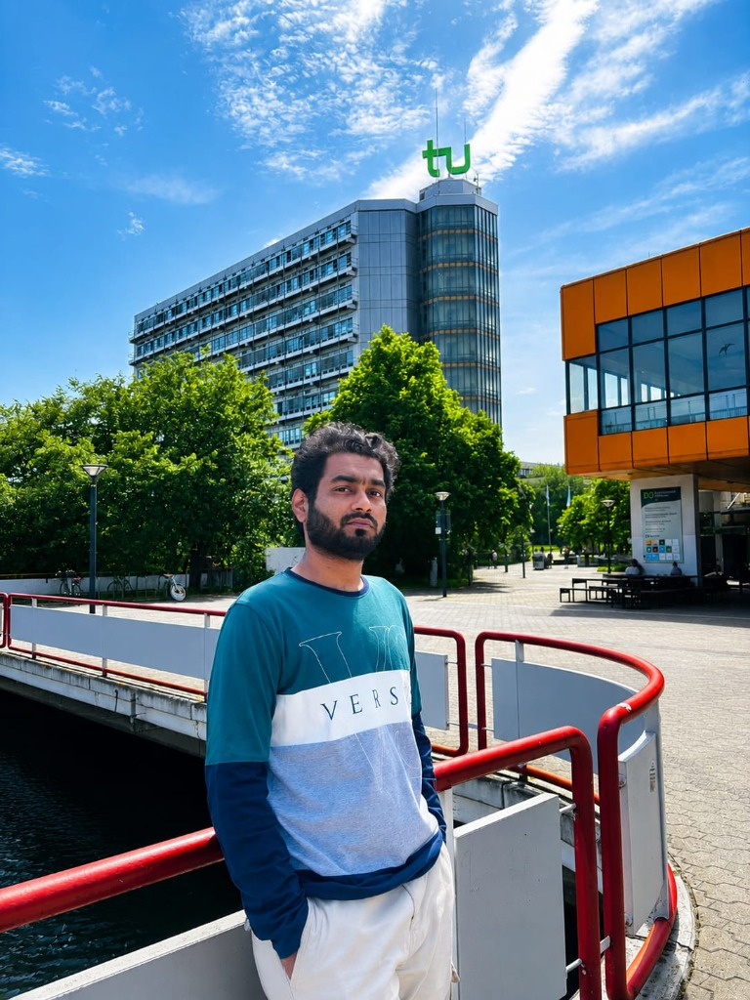

DHRUBO RATUL BASAK
Building production-grade intelligent systems where machine learning models, distributed software and network infrastructure converge. M.Sc. Data Science student at TU Dortmund University.

SYS.ABOUT
I am an AI Engineer & Data Scientist pursuing an M.Sc. in Data Science at TU Dortmund University, Germany. My technical foundation unites statistical machine learning, backend system architecture, and production enterprise networking.
Previously, I graduated with a Bachelor of Engineering in Computer Science under a prestigious full scholarship from the Government of India. I served as a Junior Network Engineer at Agni Systems NOC, resolving ISP routing failures and managing corporate VPNs, and worked as a Data Science Intern at Maxgen Technologies developing ML risk models.
LIFE.DATA
🌍 BANGLADESH & INDIA
System initialization. Root directory established in South Asia. Graduated with Bachelor of Engineering in Computer Science on a full competitive scholarship from the Government of India (ICCR).
⚡ NOC & DATA SYSTEMS
Junior Network Engineer at Agni Systems Limited NOC managing ISP routing, MikroTik RouterOS & corporate VPNs. Data Science Intern at Maxgen Technologies engineering clinical prediction models.
🇩🇪 TU DORTMUND
Master of Science in Data Science in Germany. Research on Convolutional Neural Networks (CNN) for network intrusion detection and end-to-end full-stack intelligent systems.
THE.STACK
CORE.BUILDS
CardioSense AI
Production-grade machine learning platform for clinical heart-disease risk prediction. Features Explainable AI (SHAP waterfall & force plots), secure JWT user authentication, historical patient record analytics, and hospital geolocation routing via Leaflet & OpenStreetMap. Fully containerized with Docker and GitHub Actions CI.
Jellyfin Network Lab
Secure self-hosted media server and virtualized ISP network testbed. Implements MikroTik RouterOS routing, WireGuard encrypted VPN tunnels, PPPoE server authentication, and queue-tree QoS traffic shaping behind Cloudflare Zero Trust and Nginx Proxy Manager.

EXP.NODES
Junior Network Engineer
Agni Systems Limited · Dhaka, Bangladesh
Network Operations Center (NOC). Supervised 24/7 enterprise infrastructure using MikroTik RouterOS and Cisco devices. Diagnosed BGP/OSPF transit anomalies, resolved fiber backbone disruptions, deployed WireGuard / IPsec VPNs, and optimized QoS queues for corporate clients.
Data Science Intern
Maxgen Technologies · India
Applied machine learning to clinical datasets. Formulated data preprocessing, feature engineering, and model validation pipelines for cardiovascular disease prediction using Python and Scikit-learn.
RESEARCH.KERNEL
CNN-Based Network Traffic Anomaly & Intrusion Detection
Investigating 1D & 2D Convolutional Neural Networks (CNNs) for real-time anomaly detection in high-speed enterprise packet telemetry. By translating raw flow patterns into pseudo-images and spatial feature maps, the model recognizes novel zero-day patterns without predefined signatures.
EDU.CREDS
Master of Science (M.Sc.) — Data Science
TU Dortmund University · Germany
Advanced Machine Learning, Statistical Data Analysis, Neural Networks, Cloud Data Architectures.
Bachelor of Engineering (B.E.) — Computer Science
Government of India ICCR Scholarship · India
Awarded prestigious competitive international scholarship. Focused on Algorithms, Operating Systems, Computer Networks.
UPLINK.CHANNEL
Seeking opportunities as a Werkstudent / Working Student in AI Engineering, Machine Learning, or Network Infrastructure in Germany.